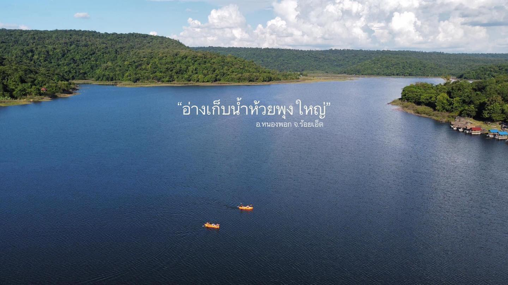
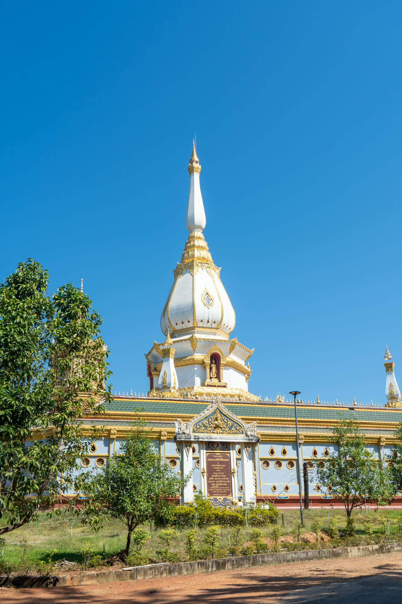

เที่ยวครบ จบในวันเดียว สัมผัสธรรมชาติและศรัทธา

ห้วยพุงเป็นสถานที่ท่องเที่ยวทางธรรมชาติที่เงียบสงบ น้ำใส อากาศดี เหมาะสำหรับการพักผ่อน สูดอากาศบริสุทธิ์ และนั่งชมวิวแบบชิล ๆ ความรู้สึกเมื่อไปถึงคือรู้สึกผ่อนคลายมาก เหมือนได้หลีกหนีความวุ่นวาย ได้ยินเสียงน้ำไหลเบา ๆ ทำให้ใจสงบขึ้นทันที

วัดผาเจดีย์ชัยมงคล ตั้งอยู่ที่อำเภอหนองพอก เป็นวัดที่มีเจดีย์สีขาวใหญ่โดดเด่น สถาปัตยกรรมสวยงามมาก สามารถมองเห็นวิวภูเขารอบ ๆ ได้อย่างชัดเจน ความรู้สึกเมื่อได้ขึ้นไปกราบไหว้คือรู้สึกสงบ อิ่มเอมใจ และเต็มไปด้วยพลังบวก เป็นสถานที่ที่ทำให้รู้สึกถึงความศรัทธาและความยิ่งใหญ่ทางพุทธศาสนา
จุดชมวิวในหนองพอกเหมาะสำหรับถ่ายรูปและชมพระอาทิตย์ตก บรรยากาศดี ลมพัดเย็นสบาย มองเห็นทิวทัศน์ธรรมชาติแบบกว้างไกล ความรู้สึกตอนยืนอยู่ตรงนั้นคือเหมือนได้ชาร์จพลังชีวิต เห็นท้องฟ้าเปลี่ยนสีอย่างช้า ๆ เป็นช่วงเวลาที่ประทับใจมาก